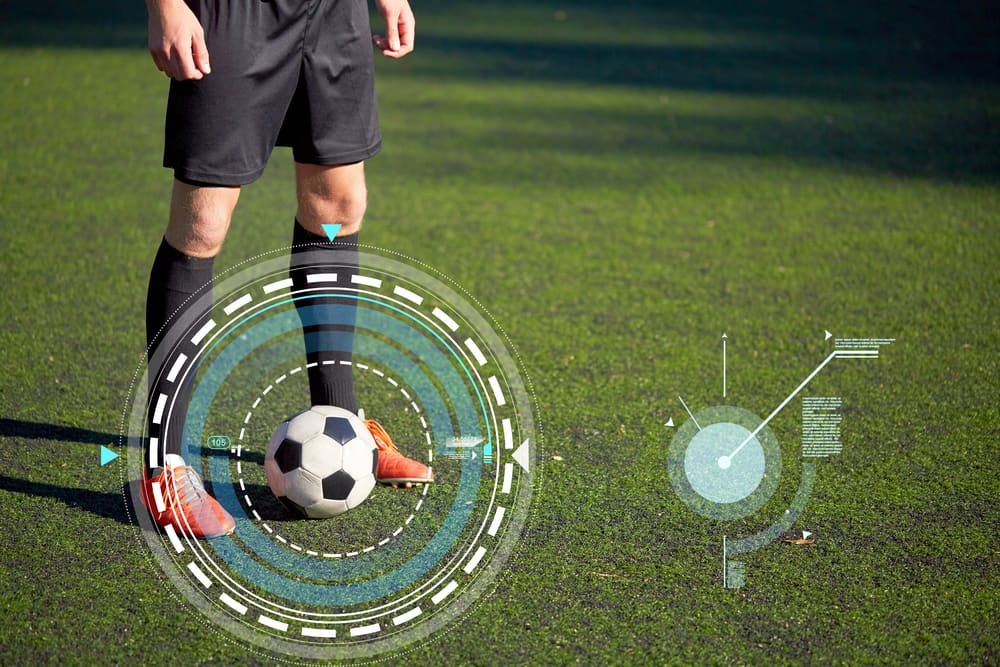

Deportes: El futuro del fútbol y la tecnologíaCómo la tecnología está revolucionando el deporte rey |
||
SeccionesOtras Noticias
Acceso |
La tecnología transformando el fútbol: Preparación física y másEl fútbol ha sido siempre uno de los deportes más populares y apasionantes a nivel mundial. Sin embargo, en las últimas décadas, la tecnología ha comenzado a desempeñar un papel crucial en su evolución, no solo en el aspecto táctico y estratégico, sino también en la preparación física de los jugadores. Los avances en tecnología están cambiando la forma en que los equipos de fútbol entrenan, se preparan para los partidos y cuidan su bienestar físico. Herramientas como los monitores de frecuencia cardíaca, las plataformas de análisis de datos y la biomecánica han mejorado significativamente el rendimiento de los jugadores y reducido el riesgo de lesiones. Impacto de la tecnología en la preparación físicaLa tecnología juega un papel esencial en el monitoreo y análisis del estado físico de los jugadores. Con el uso de dispositivos wearables como pulseras y chalecos, los entrenadores pueden monitorear el rendimiento de los futbolistas en tiempo real. Esto incluye medir variables como la velocidad, la carga de trabajo, la recuperación y el nivel de fatiga, permitiendo una gestión más efectiva de los entrenamientos y reduciendo el riesgo de lesiones. El uso de datos en el análisis tácticoAdemás de la preparación física, los datos y la tecnología también juegan un papel fundamental en el análisis táctico del juego. Los equipos ahora utilizan sistemas avanzados de seguimiento de jugadores y análisis de partidos para obtener información valiosa sobre el rendimiento individual y colectivo. Esto permite a los entrenadores tomar decisiones más informadas y desarrollar estrategias más efectivas durante los partidos. El futuro del fútbol y la tecnologíaA medida que la tecnología sigue avanzando, es probable que veamos aún más innovaciones en el fútbol. Desde el análisis de la salud y el rendimiento físico hasta las mejoras en la experiencia del espectador y el arbitraje asistido por tecnología, el futuro del fútbol estará marcado por un uso cada vez más integrado de la tecnología. Video sobre tecnología y preparación física en el fútbolMira este video para descubrir cómo la tecnología está revolucionando la preparación física de los futbolistas. |
Noticias Recientes |
|
© 2025 Noticias Hoy - Todos los derechos reservados |
||